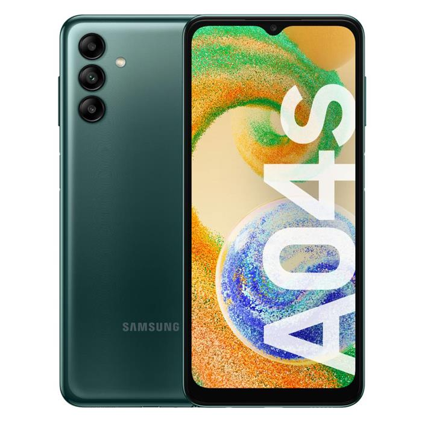
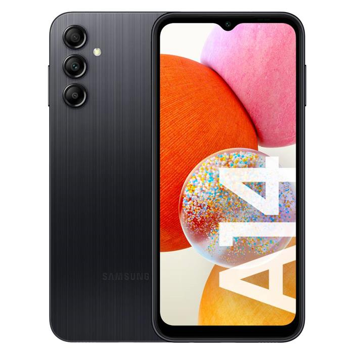
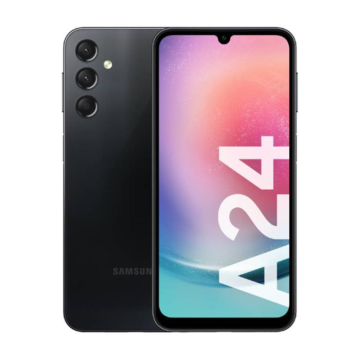

Sansung A04S
Nuevo móvil sencillo de Samsung: el Samsung Galaxy A04 es oficial como la renovación del Galaxy A03 y con una hoja de especificaciones que la verdad es que no ha cambiado demasiado. Lo que sí varía es el diseño, que ahora prescinde del módulo para las cámaras.
leer másSansung A14
Nuevo móvil sencillo de Samsung: el Samsung Galaxy A04 es oficial como la renovación del Galaxy A03 y con una hoja de especificaciones que la verdad es que no ha cambiado demasiado. Lo que sí varía es el diseño, que ahora prescinde del módulo para las cámaras.
leer másSansung A24
Nuevo móvil sencillo de Samsung: el Samsung Galaxy A04 es oficial como la renovación del Galaxy A03 y con una hoja de especificaciones que la verdad es que no ha cambiado demasiado. Lo que sí varía es el diseño, que ahora prescinde del módulo para las cámaras.
leer másSansung A34 5G

Nuevo móvil sencillo de Samsung: el Samsung Galaxy A04 es oficial como la renovación del Galaxy A03 y con una hoja de especificaciones que la verdad es que no ha cambiado demasiado. Lo que sí varía es el diseño, que ahora prescinde del módulo para las cámaras.
leer más